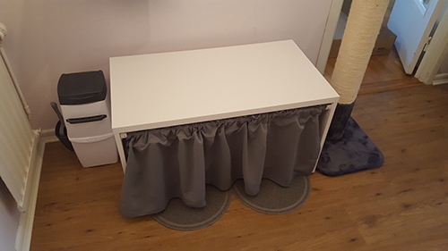

Praktisk lösning för kattlådan
Bor du i lägenhet och funderar på vart du ska göra av kattlådan? Har du för dåligt med utrymme för att ha lådan i badrummet? Om kattägaren har kattlådan någon annanstans så riskerar vederbörande att få kattsand i hela lägenheten. Inredningsmässigt kan det också vara tråkigt att ha en katttoalett mitt bland all inredning. Frågan är, vad finns det för praktiska lösningar?
Vi har haft samma dilemma och funderat länge över vad vi skulle göra med kattlådorna. Vår bästa lösning har varit att ha kattlådan i hallen. Vi tyckte inte det var så fint att ha två kattlådor helt synliga så för att gömma undan dem köpte vi en ikea låda som vi sedan ställde lådorna i. Vi borrade dit en gardinstång och satte för ett litet draperi - och voila. Kattlådorna syns inte och katterna kan själva dra undan draperiet för att komma in i lådan. Dock fick locket på lådorna åka av vilket gjorde att de drog ut mycket sand på golvet. Så efter ett tag fick locken åka på igen och då var vi tvungna att ta bort draperiet för att de skulle kunna komma in genom luckan i kattlådan.
Text av Rebeca Sundbaum